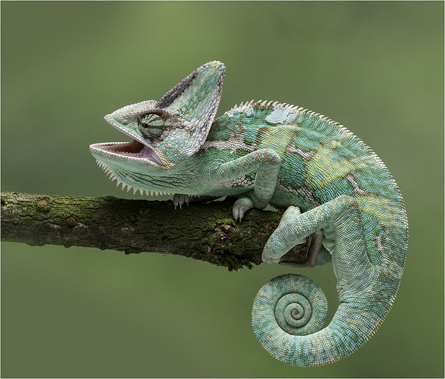

Peces
Animales acuáticos que respiran por branquias y se desplazan mediante aletas.
Los vertebrados son animales que poseen columna vertebral y esqueleto interno. Descubre sus principales grupos y características.
Animales acuáticos que respiran por branquias y se desplazan mediante aletas.

Viven parte en el agua y parte en la tierra. Pasan por metamorfosis.

De sangre fría, piel seca y escamosa. Incluyen serpientes, tortugas y lagartos.

Cuerpo cubierto de plumas, pico y gran capacidad de vuelo.

Tienen pelo y producen leche para sus crías. Habitan muchos ecosistemas.
Los vertebrados forman parte del filo cordados y se distinguen por tener un esqueleto interno, el cual les proporciona soporte y permite mayor movilidad. Incluyen desde peces y anfibios hasta aves y mamíferos.